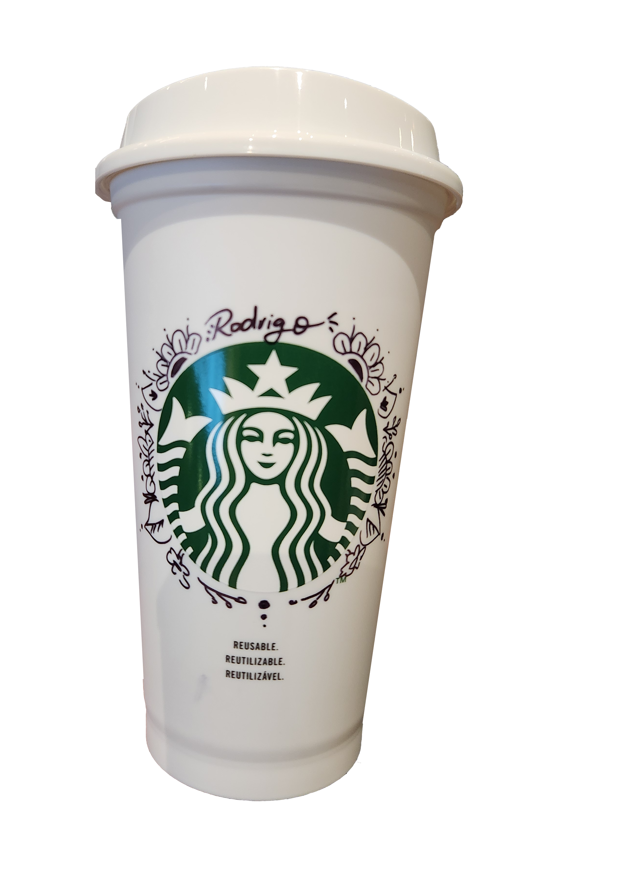
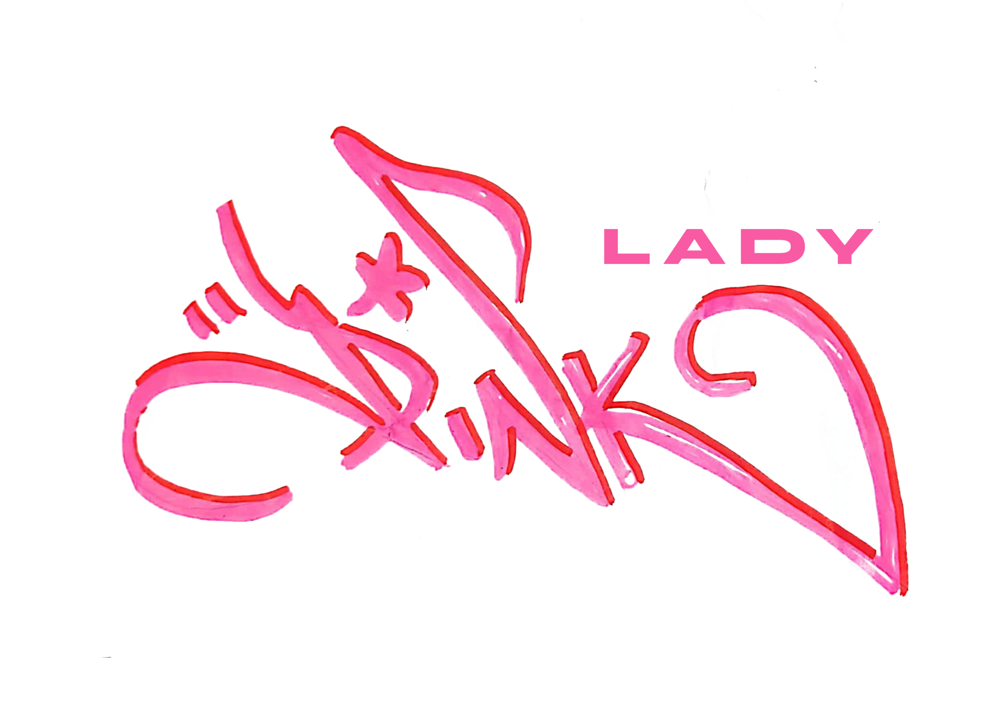
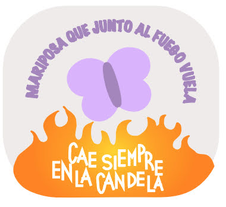
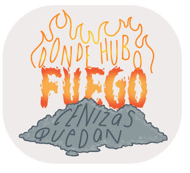
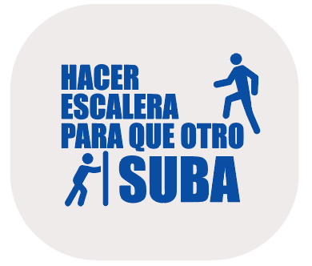
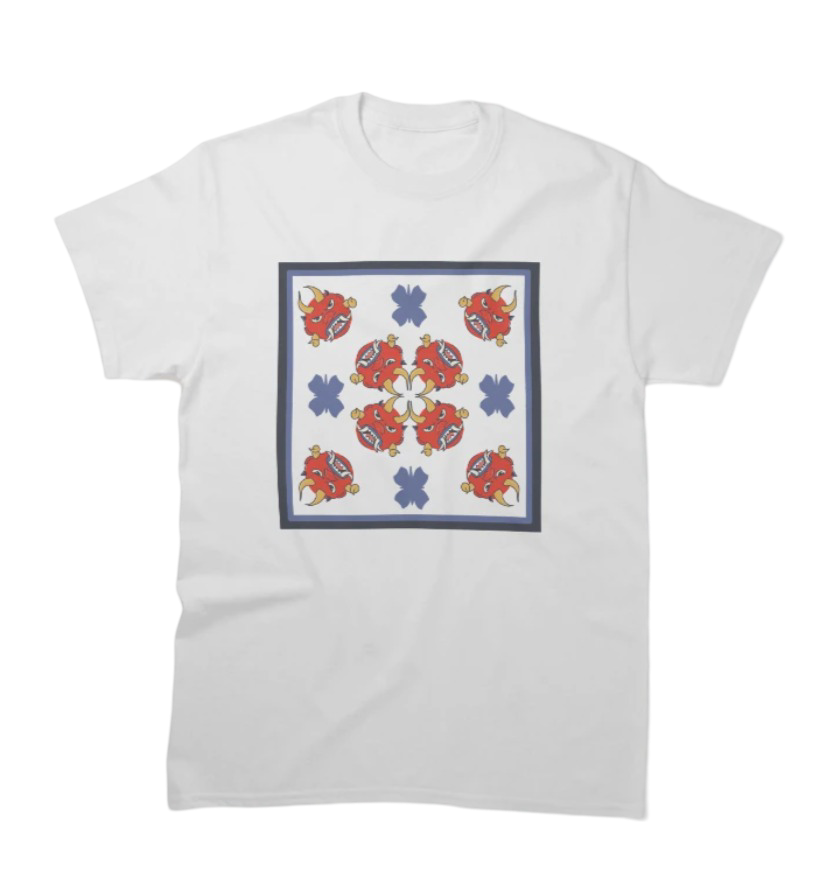
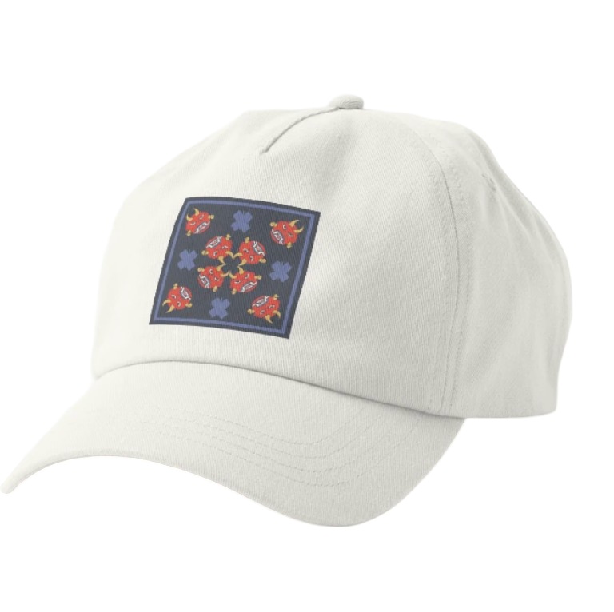
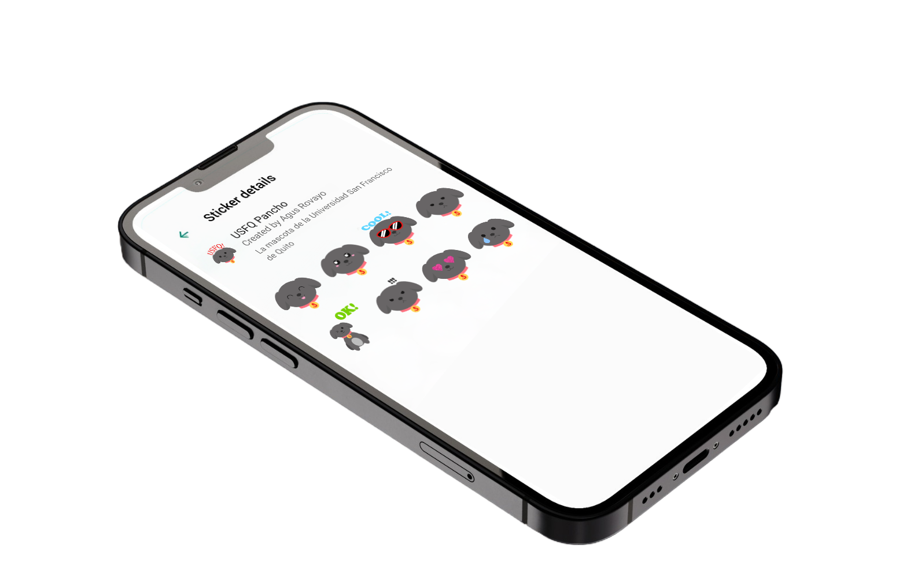
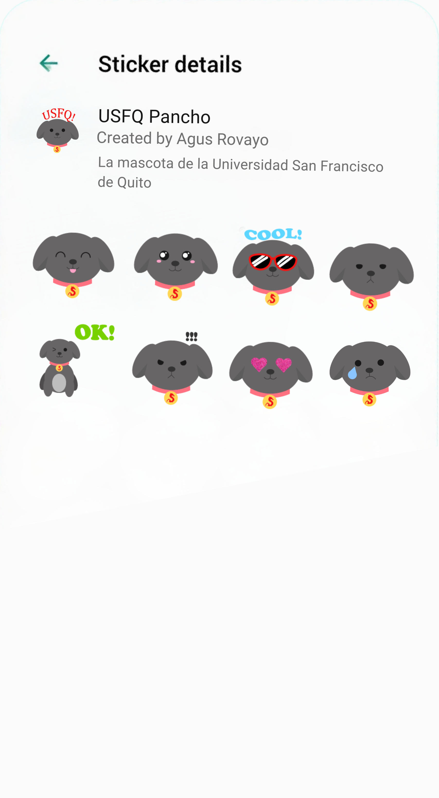

Participación en evento de exclusivo de preapertura de Starbucks. Personalización de mercadería con mandalas.




Participación en evento de exclusivo de preapertura de Starbucks. Personalización de mercadería con mandalas.



Lady Pink, artista del graffiti ecuatoriana radicada en Nueva York. Conocida por murales vibrantes y enfoque feminista.






Refranes de origen ecuatoriano convertidos en gráficas en Adobe Illustrator.

Propuesta de diseño de mercancía para un museo Ecuatoriano sobre cultura. Realizado con Ilustrador, Photoshop y Procreate.




Propuesta de diseño de mercancía para un museo Ecuatoriano sobre cultura. Realizado con Ilustrador, Photoshop y Procreate.

Stickers para WhatsApp diseñados con Ilustrador. Representan la mascota de la Universidad San Francisco de Quito, Pancho.

